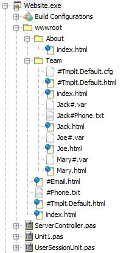

IPM makes use of files in the content directory other than those intended for end users. This includes configuration files, variables, etc.
Many of these are not desirable for end user to see directly. Because of this all such files contain a # character.
Some may have more than one . or # embedded, but the extension is considered to be only the text after the rightmost period. IPM knows this, and will refused to directly serve any files named using this format. This protects internal IPM files, but also allows you to store content that is used by your code, while protecting it from users.
For example, #Jack.var is used internally by IPM, but we do not want the end user to be able to see this file itself. If the user tried to access it using http://mydomain.com/Team/#Jack.var, IntraWeb would return a 404 not found to the browser.
Initially we used $, but svn has problems storing files with $ in the name. We also chose to use it as a suffix rather in many cases than a prefix as it allows sort matching in both the Delphi IDE, and in explorer. That is, Jack#.cfg and Jack.html can be matched near each other when sorted alphabetically, but this would not occur if the filenames were Jack.html and #Jack.cfg.